0.3 Changelogs 模组工具升级日志
This page collects the release history of the Panzer War mod tools: where to download the latest tool package, and a dated list of what each release changed — editor features, vehicle and shell data options, Lua and Fmod support, build pipeline fixes, and the Unity engine versions the project moved to. Entries are ordered newest first.
本页汇总装甲纷争模组工具的历次更新：最新工具包的下载地址，以及按日期排列的更新内容——编辑器功能、载具与炮弹数据选项、Lua 与 Fmod 支持、打包管线修复，以及工程升级到的 Unity 引擎版本。日志按时间倒序排列。
Download it from Mega:
https://mega.nz/folder/rNEDCZST#ziUOuYT0p058iQElihSnmQ
更新下载：
https://www.123684.com/s/8pZNTd-dR8KA
If you want to upgrade the mod tools in an older project, you need to overwrite the following folder:
老工程如果要升级模组相关工具，则需要覆盖如下目录
- ** MiddleLibLayer**
Otherwise you may run into unexpected errors that stop the project from compiling and building. If the build fails, open the Console and send the error stack to the developers.
否则可能会出现意想不到的报错，导致无法正常编译打包。如果无法打包，则点击 Console，将报错堆栈信息发送给开发者。
If the errors persist, consider overwriting the whole project.
若存在报错，可考虑整个工程进行覆盖。
Changelog 更新日志
2025.9.13
Switch to the new water system 改用新水体系统
Sync the code with the latest game version 同步代码至最新版游戏
*To enable the wave effect of the new water, follow this document to add package support 启用新水体的波浪效果，需根据此文档，添加包体支持

2025.1.8
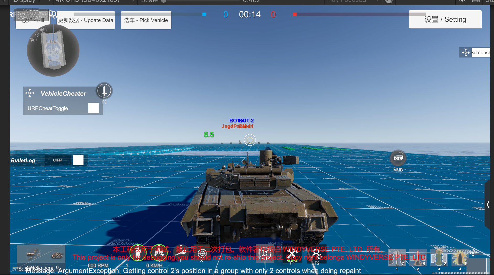
Test range update 试车场更新
Editor interface and performance optimization 编辑器界面与性能优化
The editor language now follows the system by default, and most screens no longer show both languages 编辑器语言默认跟随系统，大部分界面不会再显示双语
Code synced with the latest Steam version 代码同步至最新 Steam 版
Note for this release: remember to update the com.waveharmonic.crest folder, the water plugin has been updated 本次更新注意更新 com.waveharmonic.crest 文件夹，水体插件有更新
2024.12.8
- Improved one-click DIY export: you can now export in batches, and after modifying the source vehicle, clicking export again updates the DIY damage model and other configs to the latest vehicle data. 一键导出 DIY 功能的优化，可以批量导出，并在修改原载具后，再次点击导出，就能更新 DIY 的伤害模型等配置同步至最新的载具数据上。
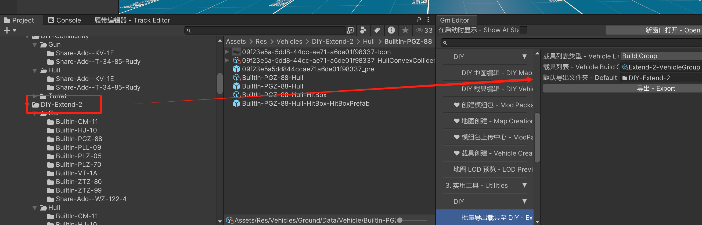
- Added a one-click display of all DIY parts, used to check whether any part has a wrong slot configuration 增加一键展览所有 DIY 配件，用来检查是否某个配件的插槽配置错误
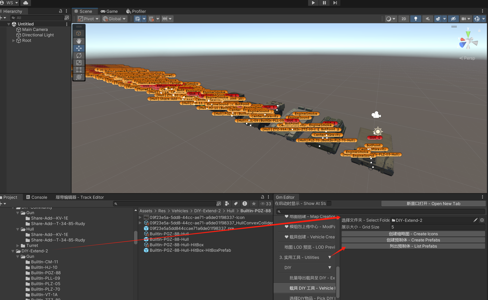
- Editor performance optimization 编辑器性能优化
- Vehicle data comparison tool 载具数据对比工具
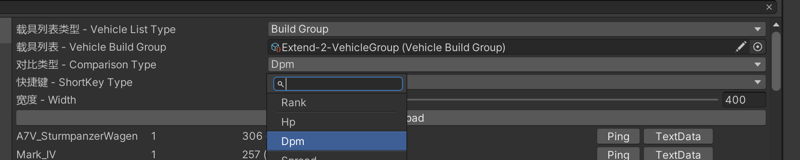
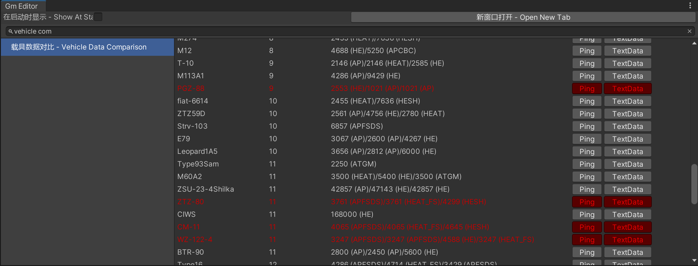
2024.12.2
- Added the Ctrl + G shortcut to open the editor tools 增加快捷键 Ctrl + G 以打开编辑器工具
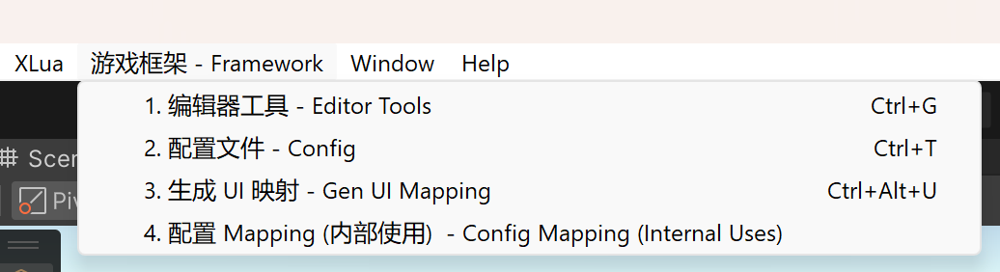
- Added target vehicles to the test range (the LuaProject path must be configured for game resources to load correctly) 试车场增加靶车 （需配置 LuaProject 路径，才可正常加载游戏资源）
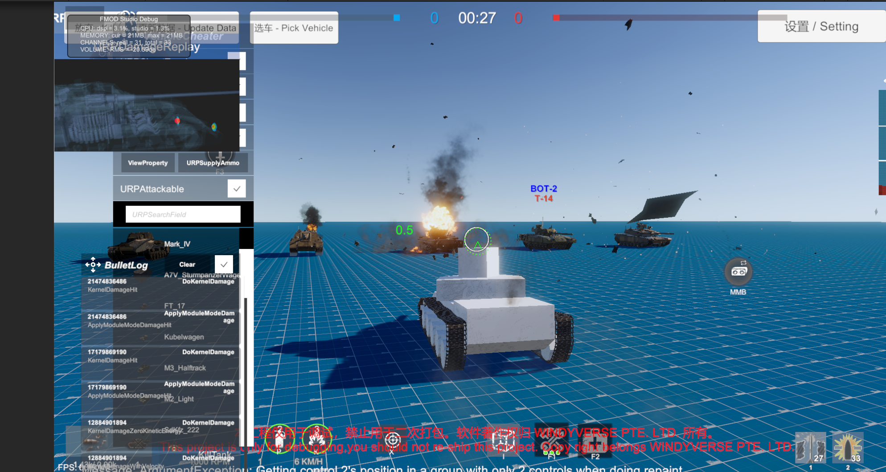
- The mask texture merging tool has been merged into the tool list 遮罩贴图合并工具合并至工具列表
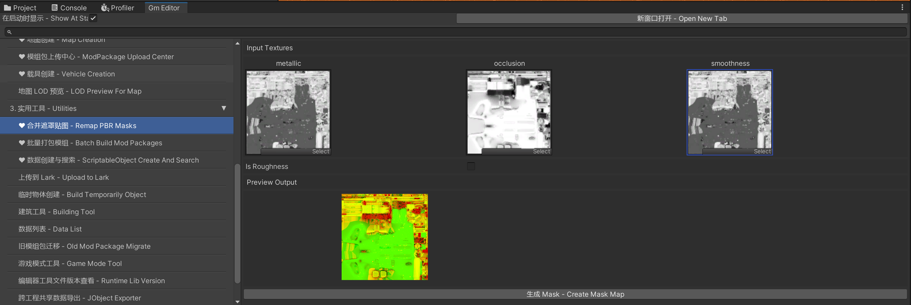
2024.10.29
- Synced the game code to the latest version, with support for the TV shell checkbox 同步游戏代码至最新版本，支持 TV 弹的勾选
- You need to copy com.waveharmonic.crest into your project folder and overwrite the UnityProject/Packages and UnityURPProject/Packages folders 需复制 com.waveharmonic.crest 至你的工程目录，并覆盖 UnityProject/Packages 与 UnityURPProject/Packages 文件夹
2024.8.27
- Fixed the wrong shell spawn point 修复炮弹出生点错误
- Fixed Android and iOS builds failing 修复 Android，iOS 无法打包的问题
2024.8.10
Changelog 更新日志
- Added a path option to LOD LOD 增加路径选项
- Fixed the penetration calculation in HP bar mode 修复血条模式穿深计算错误
2024.8.9
Changelog 更新日志
- Synced the new post-processing logic 同步新的后效逻辑
- Added parameters for some of the new post-processing effects 增加一些新后效的参数
- If you enable the new LOD, you can opt individual vehicles out of it 如果你开启用新的 lod，可以单独取消单个载具不使用新 lod
2024.7.15
Changelog 更新日志
- Fixed overpressure being able to damage friendly units 修复超压可以对友军造成伤害
- Fixed abnormal ricochet behaviour in the shot trap area 修复窝弹区跳弹表现异常
- Improved the limits on TNT equivalent and explosion radius in the workshop 优化工坊中 TNT 当量 与 爆炸范围的限制
- Besides crew members, other parts can now be affected by overpressure (the mod author has to enable it) 除成员外，其他配件也可被超压 （需要模组制作者勾选)
2024.7.14
- Added support for editing the reverse track curve 支持编辑倒车履带曲线
- Added several configuration options for bot aiming points 增加多个人机瞄准点配置选项
- Added a shell info debugging tool, available from Framework / GM / 炮弹调试 增加炮弹信息调试工具，点击 Framework / GM / 炮弹调试，进行使用
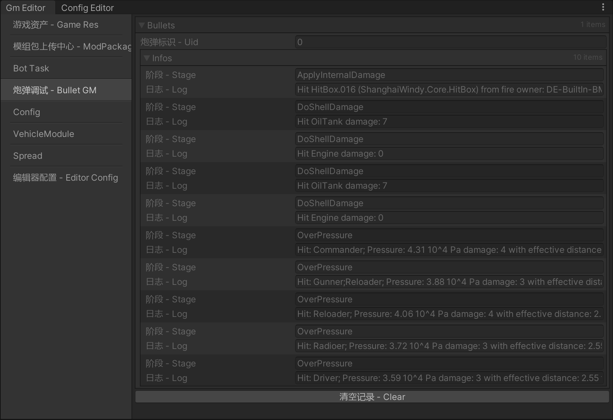
2024.5.15
- Added a config for whether the fuel tank catches fire 增加油箱是否着火配置
- Added an option for whether the observation sight can control the main gun 观察镜增加是否可以控制主炮
2024.5.2
- Add capture zone config 增加占点配置
2024.4.30
- Preset Vehicle Queue 预设队列
- Zoom Ratio 炮镜倍率设置
2024.4.22
We turned off r/w on the vehicle LOD files, halving their memory cost. All vehicles must be repacked so that the LOD file information is updated 载具的 lod 文件我们关闭了 r/w ，减少了一倍的内存开销。 需要重新打包所有的载具，以更新 lod 文件的信息
The SRP-Vehicle-Camouflage shader, which is only used for previewing inside the editor, is no longer included in the build, which reduces memory usage 用于编辑器内预览的 SRP-Vehicle-Camouflage 着色器不再会打到包中，以减少内存开销
2024.4.20
- One-click Bank import Bank 一键导入
2024.4.12
- Improved the ammunition boundary tool 优化弹药边界工具
2024.4.11
- Added switching between HP and module damage 增加 HP / 模组切换功能
2024.4.6
- Improved the flow for running a vehicle from the editor (the test drive function on VehicleData) 改进编辑器运行载具流程（VehicleData 上试驾功能）
- Improved the one-click build and publish flow in the editor (batch mod build management, Mod/模组批量打包管理) 改善编辑器一键打包发布流程 （Mod/模组批量打包管理）
2024.4.4
- Added finer collision for vehicles 增加了载具的碰撞细化
- Mod upload now supports a local http proxy 上传模组增加了本地 http 代理功能
- A module can now be set to either a loader or an autoloader 模块可以装填手自动装填二选一了
2024.3.21
- Added a mod upload tool 增加模组上传工具
- The engine version used at runtime changed to 2022.3.21f1 引擎运行版本变更为 2022.3.21f1
Enter unityhub://2022.3.21f1/bf09ca542b87 in your browser to install the new Unity version 将 unityhub://2022.3.21f1/bf09ca542b87 输入浏览器，安装新版本 Unity
2024.1.12
- Fixed some mod tools not showing up when the iOS module is not installed 修复未安装 iOS module 时候，部分模组工具不显示
2024.1.11
- Added auto save 增加自动保存
2023.12.30
- Third expansion data 三扩数据
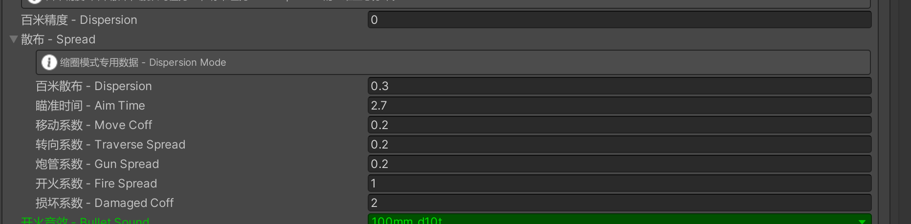
- Range Finder feature Range Finder 功能
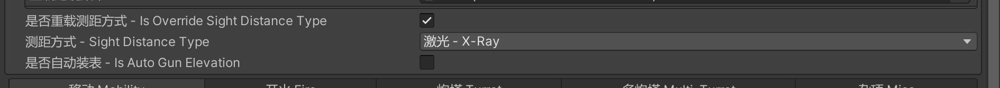
- Improved the quick vehicle thumbnail generation 快速生成载具缩略图功能优化
2023.12.25
- Quick vehicle thumbnail generation 快速生成载具缩略图
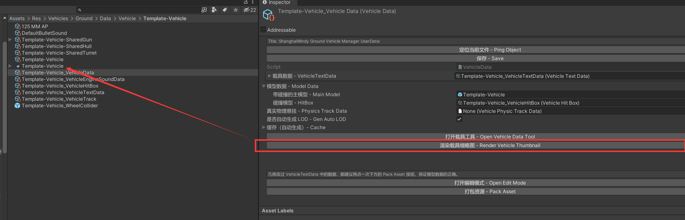
- Custom vehicle material feature 载具自定义材质功能
2023.12.23
- Improved the custom material editor 改进自定义材质编辑器功能
2023.12.21
- Added the custom material feature 增加自定义材质功能
2023.12.16
- Added pdb debug logs, which make it easier for developers to locate editor errors 增加 pdb 调试日志，方便开发者定位编辑器报错
- Added a batch of BulletVFX definitions built into the project 增加一批工程内置 BulletVFX 定义
- Improved the dropdown selection on some screens 一些界面优化下拉框选择功能
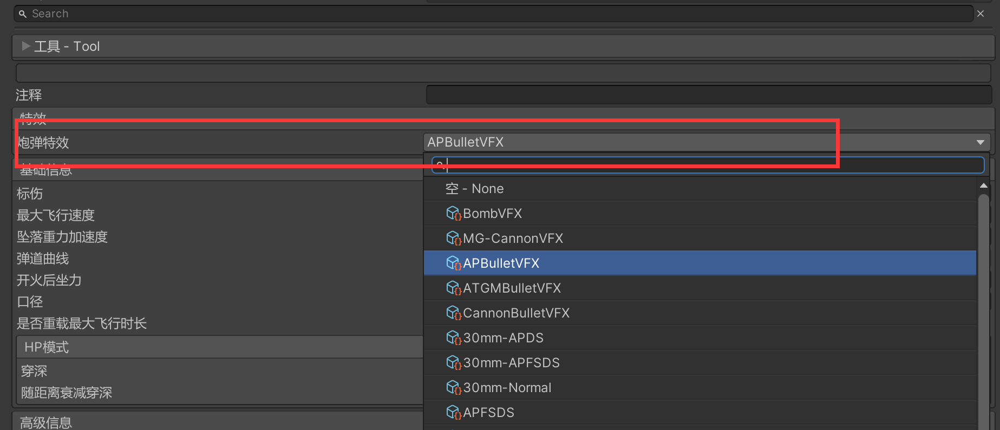
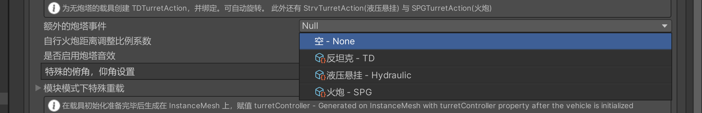
2023.7.23
- Fixed the sloped penetration formula 修复斜穿公式计算错误
2023.7.18
- Added a warhead material with fixed penetration, ExplosionWarheadMaterial 增加固定穿深的弹头材质，ExplosionWarheadMaterial
- Refined the warhead information for the different shell types 细化不同弹种的弹头信息
2023.7.8
- Added a sloped penetration parameter to warhead materials - Penetration Vs Angle Coff 弹头材质增加斜穿参数 - Penetration Vs Angle Coff
- The binding between modules and multi-turret setups now uses part GUIDs. VehicleTextData automatically generates a series of GUIDs from the multi-turret data; fill the matching GUID into a module and the debuff of that internal module is linked to the corresponding turret automatically 模块与多炮塔的绑定改为配件 GUID，在 VehicleTextData 上，会根据多炮塔数据自动生成一系列 GUID，在模块上填写对应的 GUID，则内部模块的 debuff 会与对应炮塔进行自动关联
- The multiple eras in VehicleInfo are now an array; just click the VehicleInfo data once and the old data is migrated into the new array VehicleInfo 中的多年代改成了数组，只要点击一下 VehicleInfo 数据，对应老数据会迁移到新的数组下
2023.6.24
- Added the aircraft Fmod project 增加飞机 Fmod 工程
2023.4.19 (1.0.10)
- Fixed the position offset of nodes such as FFPoint when the turret is scaled 修复炮塔带缩放情况下， FFPoint 等节点出现位置偏差
- Fixed Lua breakpoints failing to recognise the file name; select the lua scripts already imported into Unity, then right-click Reimport 修复 Lua 断点无法识别文件名， 需要把已导入 Unity 的 lua 脚本选中，然后右键 Reimport 一下
2023.4.17 (1.0.8)
- Fixed Lua Property fields being parsed incorrectly in some cases 修复了 Lua Property 字段部分情况下解析异常
- Fixed OnStarted not being called on Common type Lua scripts 修复了 Common 类型 Lua 脚本 OnStarted 未调用
- Added a Common type Lua script, FollowCameraTutorial, which cycles through the vehicles in the match; press F1 during battle to activate it 增加了一个 Common 类型 Lua 脚本 FollowCameraTutorial ，轮播局内载具，再战斗中按 F1 生效
2023.4.16 (1.0.7)
- Fixed an editor layout error 修复了编辑器布局错误
- Added a validation tool that checks the project for broken assets 增加了校验工具，检查是否项目存在损坏资源
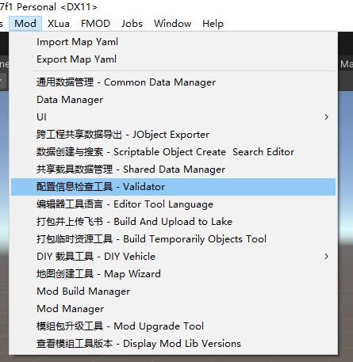
Currently supported: missing vehicle LOD, missing VehicleHitBox 目前支持：载具的 LOD 是否丢失，VehicleHitBox 是否丢失
- Fixed several problems with Vehicle Data Editor after reopening the editor 修复 Vehicle Data Editor 重开编辑器后的一些问题
2023.4.15 (1.0.5)
- Fixed the error when packing a secondary gun placed under Turret; this bug only exists in editor tools from Tuesday onwards 修复了位于 Turret 下的副炮打包时候报错，此 bug 只存在周二以后的编辑器工具中
2023.4.14 (1.0.4)
- Added an option that only allows an aircraft to fire once it is aimed at the target 增加飞机瞄准到目标才允许开火选项
2023.4.12
- Added the fmod sound debugging tool 新增 fmod 音效调试工具
- Added an option for aircraft turrets to use a parent object by default to correct the axis 飞机炮塔增加是否默认套父物体纠正轴向
2023.4.9
- Added FPS weapon support to the test range 试车场增加对 FPS 武器的支持
- Added obstacles to the test range 试车场增加障碍物
- Added the Lua Profiler for monitoring the performance of the lua scripts you write. Watch out for scripts that cost more than 0.1 ms and are called every frame 增加 Lua Profiler，用于自己写的 lua 脚本的性能监控。 需要注意耗时在 0.1ms 以上的脚本是否每帧在调用
2023.4.6
- Packing a paid mod now enforces a check that the mod package id has been filled in 付费模组打包时候强制检查是否填写了模组包 id
- Fixed garbled text on the shell page 修复炮弹页面文字乱码
- Fixed errors in the generated ui lua binding code 修复生成 ui 的 lua 绑定代码错误
2023.4.5
- Synced API updates 同步更新 API
2023.3.27
- Fixed the sync Property button not showing on some lua panels 修复部分 lua 面板没显示 同步 Property 的按钮
- Sight images and text now support attaching lua scripts 瞄具图片与文本支持挂 lua 脚本
2023.3.26
- Added a one-click data update button to the in-editor test range 编辑器内试车场增加一键更新数据按钮
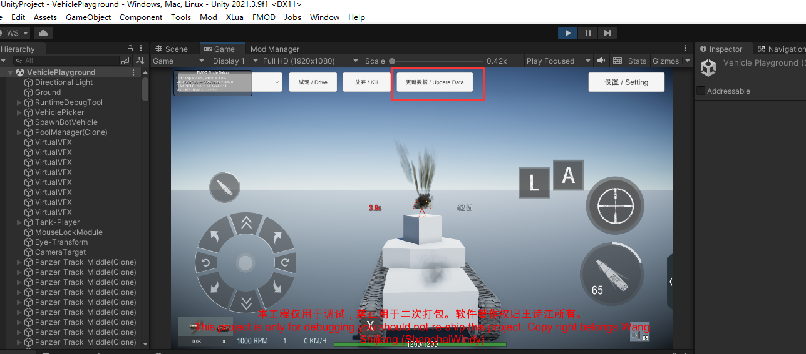
- Added an option in the Project Setting window for whether to read the editor's local assets first Project Setting 窗口增加是否启用优先读取编辑器的本地资源选项
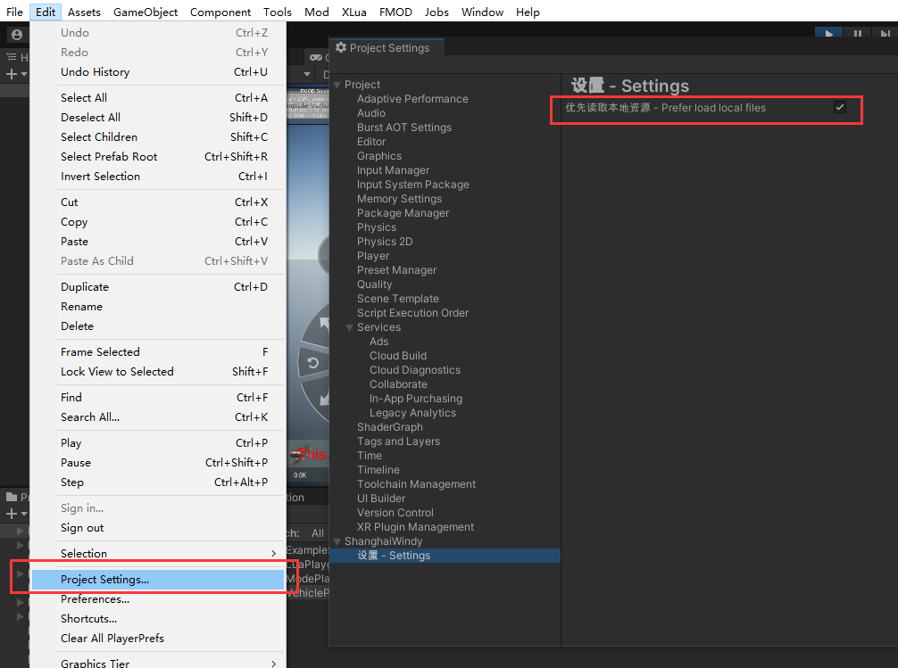
- Added Lua Behavior configuration to DIY DIY 增加 Lua Behavior 配置
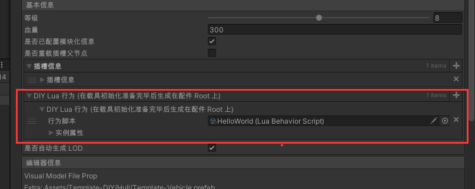
- DIY data and Text Data can now both be read directly from the editor, so new data takes effect without repacking DIY 数据，Text Data 数据，现在都支持从编辑器直接读取，无需重新打包，即可让新数据生效
- The PropValue class now supports listening to events from Lua PropValue类 支持从 Lua 监听事件
self.OnTotalDamageChanged = function(oldVal, newVal)
print(tostring(oldVal) .. " -> " .. tostring(newVal))
end
self.vehicle.basePlayerState.totalDamage:OnValueChanged("+", self.OnTotalDamageChanged)
- Added the LuaCommonInstanceData class for common scripts (such as the gui of multi-turret vehicles) 增加 LuaCommonInstanceData 类，用于做通用脚本 （如多炮塔的 gui 那种）
2023.3.23
- Vehicle scripts written in Lua can load the version modified inside the editor first, without repacking the vehicle Lua 编写的载具脚本，可以在不重新打包载具的情况下，优先读取编辑器内已修改的版本
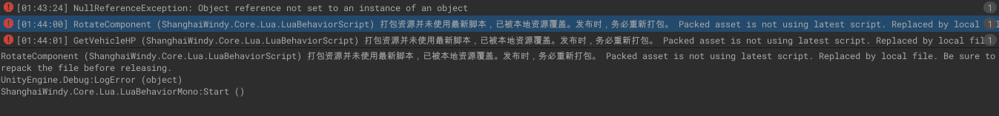
- Lua scripts can be attached directly to the vehicle config data, which keeps them easier to manage 可在载具配置数据上直接挂 Lua 脚本，方便统一管理
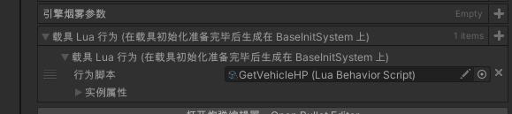
- Packing a vehicle now enforces a check for an object named MainBody, to avoid runtime errors 载具 Pack 时候，强制检查是否有命名为 MainBody 物体，避免运行时报错
- Added PlayerState documentation to the API docs API 文档增加了 PlayerState 相关的说明文档
2023.3.21
- Added the debug scene for Lua modes,** ModePlayground.unity** 增加 Lua 模式的调试场景** ModePlayground.unity**
Path 路径：Packages/com.shanghaiwindy.middlelayer/Tools/RuntimeDebugger/ModePlayground.unity
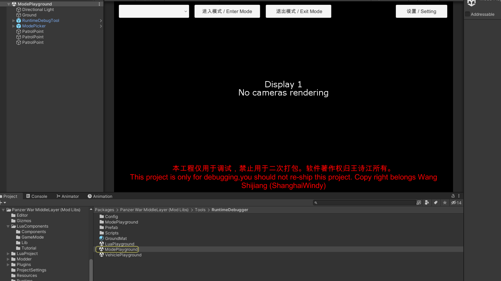
- The in-editor vehicle debugging tool has been renamed to VehiclePlayground.unity 编辑器内的载具调试工具改名为 VehiclePlayground.unity
Path 路径： Packages/com.shanghaiwindy.middlelayer/Tools/RuntimeDebugger/VehiclePlayground.unity
- Added TeamAPI, which makes it easier to get the friendly and enemy teams 新增 TeamAPI 方便获取敌我队伍
2023.3.20
- Major changes on the Lua side, with brand new tutorial documents Lua 侧大改动，全新教程文档
2023.3.15
- The FmodPlayComponent component is now public, see the usage document: FmodPlayComponent 组件公开，使用文档见：
- Added interfaces, see the reference document. In xlua you have to prefix CS. before the class name to access these methods, for example CS.ShanghaiWindy.Core.API.VehicleAPI 增加接口，参考文档。xlua 需要加上 CS.类名 才能正常访问此方法。 如 CS.ShanghaiWindy.Core.API.VehicleAPI
2023.3.14
- Added an Update Extra Info button to DIY Holder DIY Holder 增加更新 Extra Info 的按钮
- The Lua script samples are placed in the MiddleLibLayer\LuaComponents folder, and the default Template-Vehicle already uses them Lua 脚本示例放在 MiddleLibLayer\LuaComponents 文件夹下，默认的 Template-Vehicle 已使用此示例脚本
- Copying vehicle data now has a panel for customising the Asset Name of the copied vehicle 复制载具数据增加面板自定义复制后的载具 Asset Name
- The mod package page now warns against using the default name 模组包页面提示不要使用默认的名称
2023.3.13
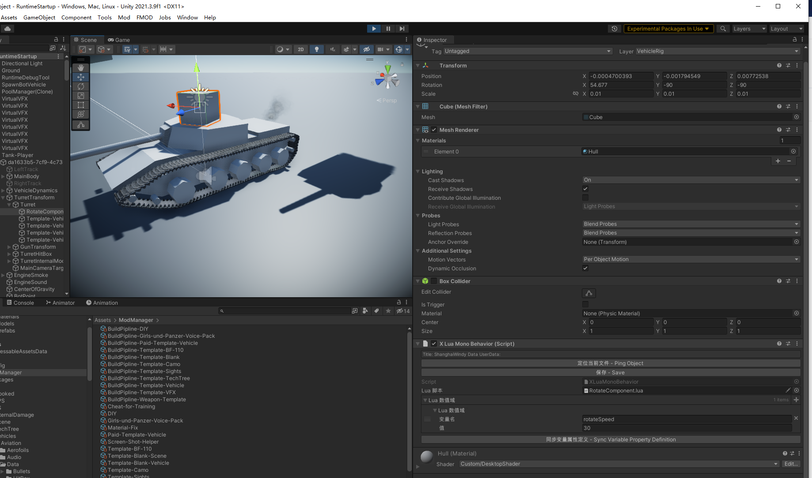
- Added support for Lua components (XLuaComponent); in UnityProject, a sample rotation script was added to Template Vehicle 增加对 Lua 组件的支持 （XLuaComponent），在 UnityProject 的中，给 Template Vehicle 增加了一个示例的旋转代码
- The Vehicle Data screen lets you click through to the generated prefab Vehicle Data 界面可点击查看生成的预制体
2023.3.6
- Fixed several HitBox edit windows appearing in some cases 修复部分情况下，会出现多个 HitBox 编辑窗口
- Added length validation to the uuid of paid mods, so that a mistyped uuid no longer stops the paid mod from loading 付费模组的 uuid 增加长度校验，防止输错 uuid，导致付费模组无法加载
- Improved the display of some screens 优化部分界面的显示
2023.3.5
- Fixed some aircraft not loading in game after being packed; BuildPipline has to be rebuilt 修复部分飞机在打包后游戏不加载，需要重打 BuildPipline
- Fixed the thickness shown in the module armour editing screen not matching the actual value 修复编辑模块装甲的界面的厚度显示与实际不一致
2023.3.2
- Fixed the LOD generation cache file not clearing outdated meshes 修复的 LOD 生成的缓存文件未清除过期 Mesh
- Fixed clicking Pack on a vehicle jumping to the LOD data in some cases 修复了部分情况点击载具的 Pack，跳转到 LOD 的数据
2023.3.1
- Fixed the wrong turret path in the aircraft editor 修复飞机编辑器的炮塔路径错误
- Fixed some Chinese text display errors in the ammunition editor 修复弹药编辑器一些中文显示错误
- Added an anti-HEAT thickness setting to HitBox (it does not take effect in game yet, support will come in a later version) HitBox 增加抗破的厚度设置 （游戏内暂时还未生效，等后续版本支持）
2023.2.23
- Fixed ammo racks being sorted by name in reverse order 修复弹药架按名字倒序排序
- When a DIY vehicle is taken apart, shared data is now created automatically to keep both sides in sync 拆解 DIY 时，自动创建共享数据，用于同步两侧数据
2023.2.22
Ammo racks are sorted by name 弹药架按名字排序
LOD generation now assigns the layer from the original object 生成 lod 时候，根据原始物体的layer赋值
2023.2.21
- Fixed the error caused by incorrect ammo rack sorting 修复了弹药架排序错误的报错
2023.2.18
- Improved the edit mode of Vehicle Data and Vehicle HitBox, so that editing is still possible in the cases where the Inspector loses focus 改进 Vehicle Data 与 Vehicle HitBox 的编辑模式，防止部分情况下 Inspector 失去聚焦的情况下，无法编辑。
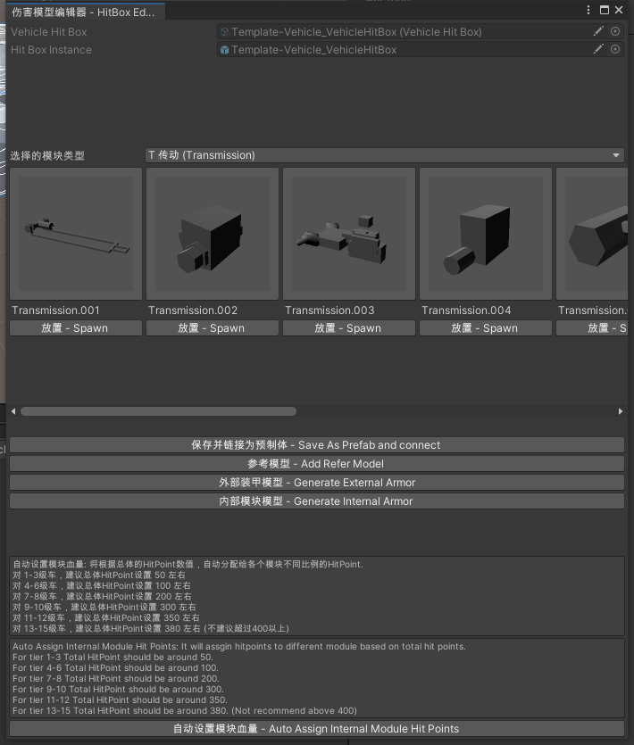
2023.2.15
- Fixed a mod package still being generated with encryption information after the mod encryption checkbox was cleared 修复去除模组加密勾选项，仍生成带加密信息的模组包
- Added some null reference checks for aircraft 飞机增加一些空引用的判断
- Fixed terrain materials being lost when importing a DIY map 修复 DIY 地图导入，地形材质丢失
- Improved the display of some error messages and translated them into Chinese 优化与汉化部分报错信息的显示
2023.2.12
- Added PrefabPackerGroup, which can regenerate the prefabs of tanks, aircraft and DIY vehicles in batches 增加 PrefabPackerGroup，可以批量对 坦克，飞机 ，DIY 生成的预制体进行重新生成
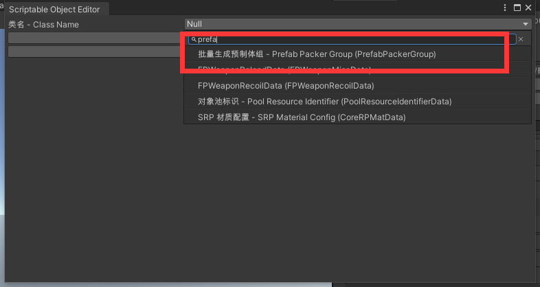
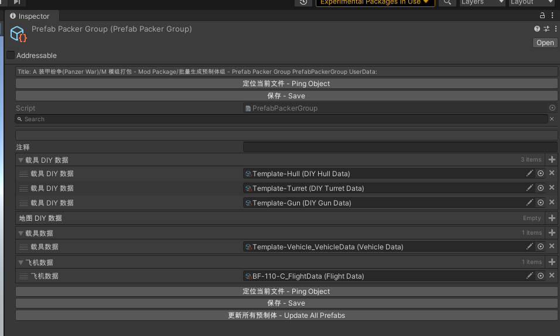
- Added an option to the build flow that automatically repacks tanks, aircraft and DIY vehicles during the build 在打包流程增加选项，可在打包时候自动重新 Pack 坦克，飞机 ，DIY
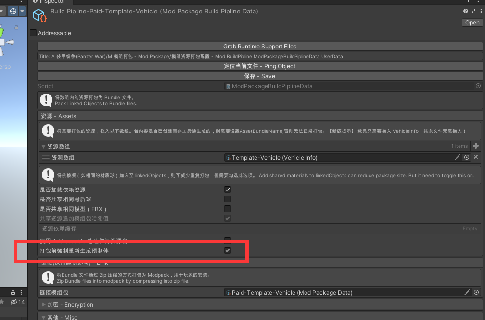
- Added a lua mono component, so lua methods can be attached to a gameobject and run 增加 lua 的 mono 组件，可以挂载 lua 方法到 gameobject 上进行运行
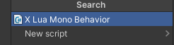
2023.2.6
- Added build support for il runtime dlls 增加对 il runtime 的 dll 的打包支持
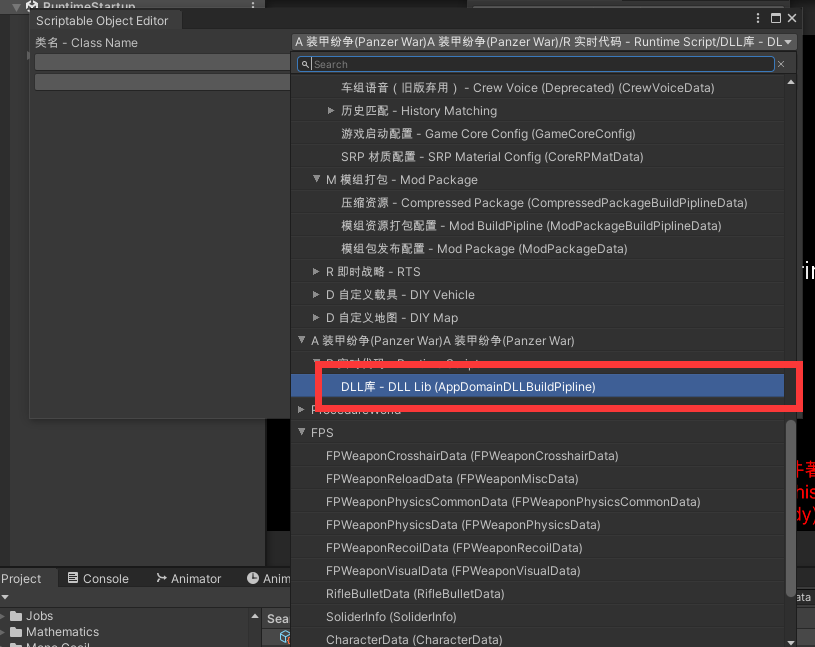
- Added a language switch for the editor tools, so the interface can show Chinese only and stay clearer 增加编辑器工具的语言切换，可以仅显示中文，使界面更加清晰
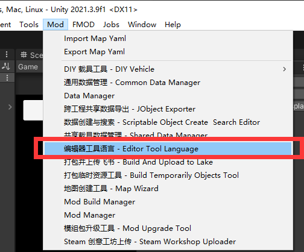
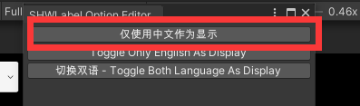
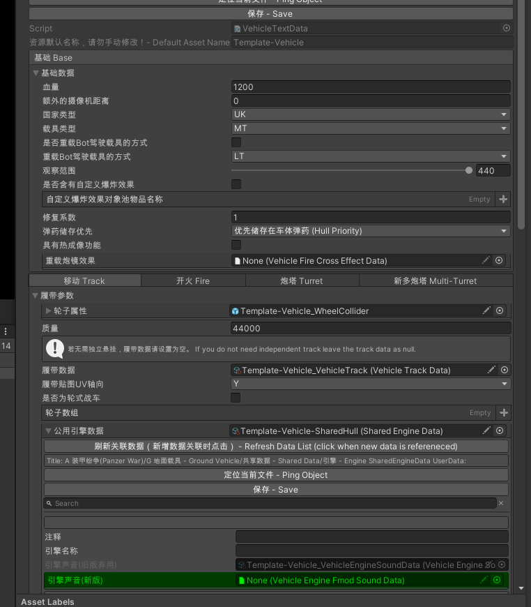
2023.2.2
- Added an option to clear references on Asset Prop Asset Prop 增加清空引用的选项
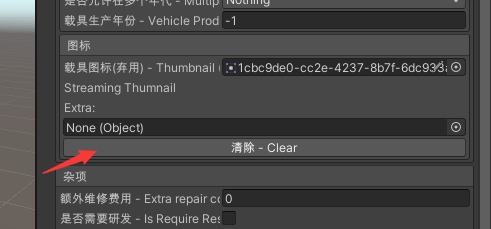
- When packing, the aircraft editor now reports which object has a broken reference 飞机编辑器在 Pack 时，会提示哪个物体的引用错误
- Added hints to the aircraft editor 飞机编辑器增加提示
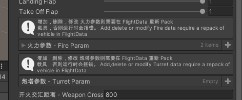
2023.1.28
- Common assets have been moved to the shared folder, see the migration document: 常用资源转到共享目录，迁移文档见：
- Fixed mods built with dependencies failing to load those dependencies in the live debugging tool 修复使用依赖打包的模组，在实时调试工具内无法正常加载依赖
2023.1.26
- Vehicle thumbnails switched to Streaming 载具缩略图改为 Streaming
- Added a settings screen to the vehicle debugging tool and updated its assets to the latest 载具调试工具增加设置界面，资源升到最新
- Packing tanks, aircraft and DIY vehicles now forces R/W on for the HitBox and the module meshes (without it, non-uniform scaling causes a Collision Mesh Data error in game) 坦克，飞机，DIY Pack 时候，会强制 HitBox 与 模块模型的 R/W 勾上 （未勾上，会导致非等比缩放时，游戏内报 Collision Mesh Data 的错误）
- Added an Engine Smoke array to DIY tanks DIY 坦克增加 Engine Smoke 数组
2023.1.15
- Fixed LODs being lost when a vehicle is edited after it was packed. Vehicle editing speed has also been improved! 修复了 pack 载具后，再编辑载具会导致 lod 丢失。 同时，编辑载具的速度得到了优化！
- Improved the build speed of vehicles and reduced the size of the built vehicle package 优化了载具的打包速度，以及减小了载具的打包包体大小
2023.1.11
- Added custom images to the sight, plus a text overlay and text colour 准镜增加图片自定义，准镜增加文字覆盖，文字颜色
- Removed the old sound null check from the validation that runs when DIY generates a Prefab DIY 生成 Prefab 的检查删去对旧音效的判空逻辑
2022.1.2
- Fixed some bugs 修复一些 Bug
2022.12.18
- Fixed Pack Assets not working on tank assets 修复无法对坦克资源进行 Pack Assets
- A Wrapper is now created automatically for the wheels of wheeled vehicles, which prevents rotation errors caused by wrong axes coming from the modelling software 针对轮式载具轮子自动创建 Wrapper，防止因为建模软件的错误轴向导致旋转错误
- Added a shortcut for exporting assets as a Unity Package, which makes it easier to report problems to the developers. Details: 增加资产导出 Unity Package 的快捷方式，方便反馈问题给开发者。详情见：
27. Send Mod to Devs for Debugging 发送至模组开发者查问题
2022.12.17
- Added the publish channels modpack, mod.io and the Steam Workshop 增加发布渠道 modpack，mod.io 与 steam 创意工坊
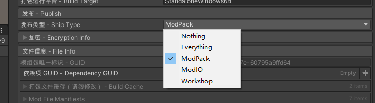
- Added the Workshop upload tool package (the package has to be added to the project manually, the same way as middle layer) 增加创意工坊上传工具包 （工程需要手动添加 package，与 middle layer 添加方式一致）
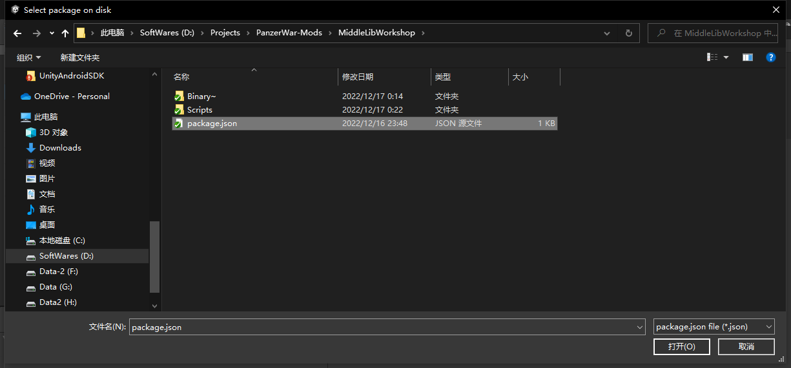
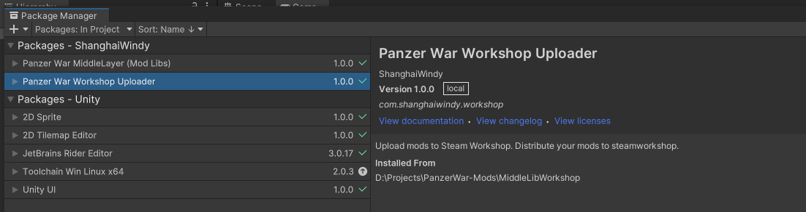
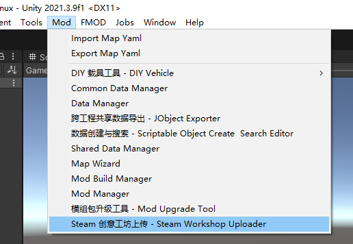
- Improved asset dependencies when the dependency option is checked during a build 优化打包勾选依赖情况下的资源依赖
2022.12.14
- Added an automated dds to png conversion flow 增加 dds 转 png 自动化流程
2022.12.1
- DIY asset references changed to GUID references, with backward compatibility DIY 资源引用改为 GUID 引用，且兼容旧版本
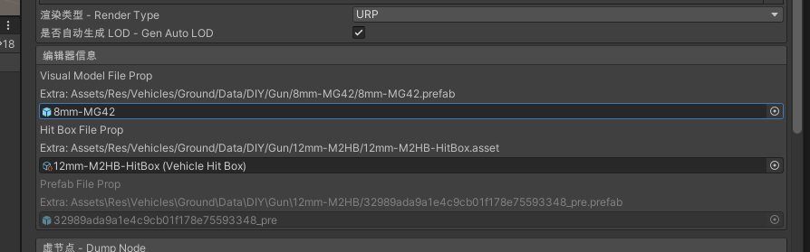
2022.11.30
- Fmod structure changes Fmod 结构修改
- Major changes to the project structure, see the upgrade guide: 工程结构巨大变动，升级指南见：New Project Migration 新工程迁移
2022.11.27
- Added mod support for Fmod 增加 Fmod 的模组功能支持
2022.11.22
- Quick creation and search for config data 配置数据快速创建与搜索功能
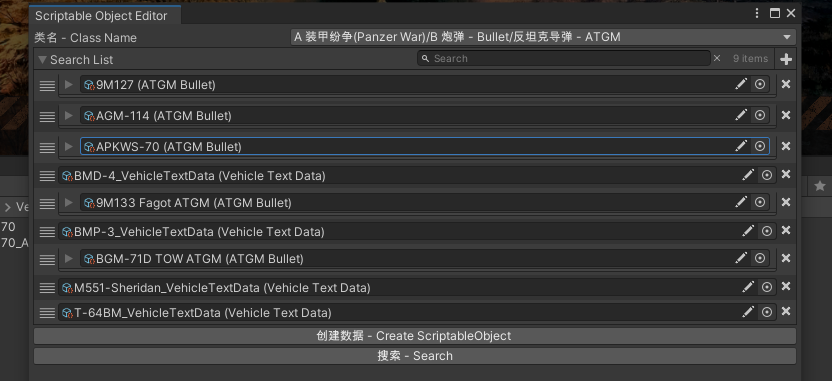
- Preset custom textures: the texture files are extracted into the specified folder 预制自定义贴图，将贴图文件解压到指定目录
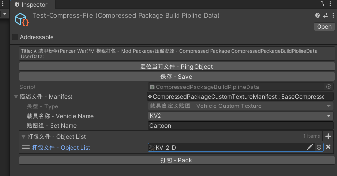
- Preset Fmod audio events; a number of tank sounds are now built in and can be configured on a tank directly. 预设的 Fmod 音频事件，目前内置了一些坦克的音效。可直接配置在坦克上。
Located at 位于：Assets/Res/Vehicles/Data/FMod
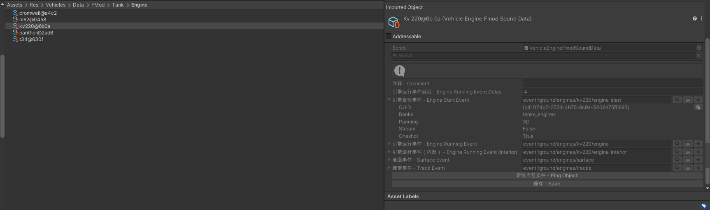
- Added extra engine smoke configuration points to VehicleTextData VehicleTextData 增加额外额外的引擎烟雾的配置点
- Added a self-destruct feature, which can be configured in VehicleTextData or through a new self-destruct component 增加自爆功能，可在 VehicleTextData 配置，或者新增自爆组件
2022.11.6
- Added a visual dependency log for BuildPipline with dependency asset loading enabled. You can search the log to check for redundant assets. 针对开启加载依赖资源的 BuildPipline，增加了依赖的可视化日志。可通过 log 的搜索，检查资源的冗余。
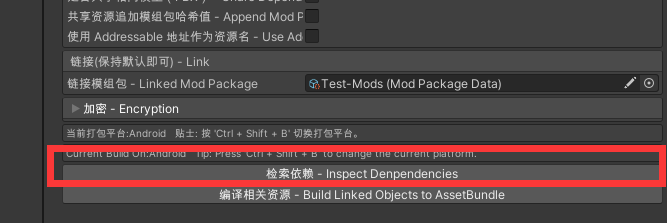
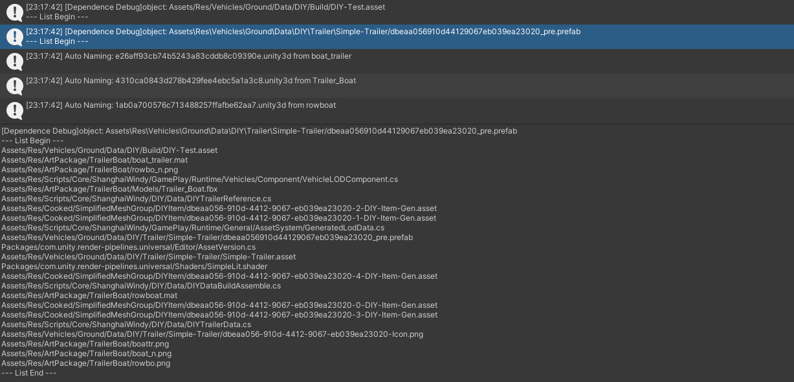
2022.11.1
- Added support for firing groups 支持发射组
- Added support for firing together with the main gun and secondary gun buttons 支持随主炮，副炮按钮一起开火
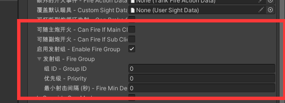
- Added Dym to the firing config of simple multi-turret setups 简单多炮塔的开火配置增加 Dym
2022.10.30
- When DIY vehicle components generate a prefab, the matching LOD is now generated automatically. For prefabs that already exist, click regenerate prefab to make the LOD take effect DIY 载具相关组件生成预制体时，将对应生成自动的 LOD。对于已创建的预制体，需要点击重新生成预制体，才可以使 LOD 生效
- Added a DIY vehicle file picker, used to select DIY vehicles in bulk 增加 DIY 载具文件选取的工具，用于批量选择 DIY 载具
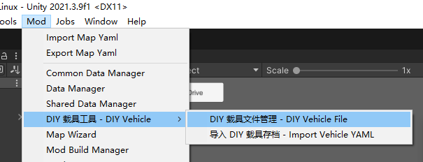
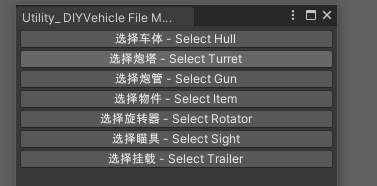
- Selecting several DIY vehicle configs of the same type shows the batch operations 选中多个同类型的 DIY 载具配置时，会显示批量操作
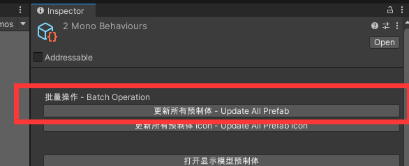
- DIY trailers are now officially included 正式加入 DIY 的拖挂
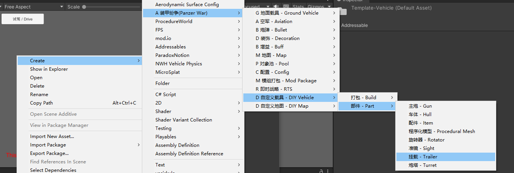
2022.10.25
- Added importing a DIY save as a DIY vehicle config, so that mod authors can ship a preset vehicle together with their parts mod. 增加 DIY 存档导入为 DIY 载具配置的功能，方便模组开发者在提供配件模组的同时，提供一个预设载具。
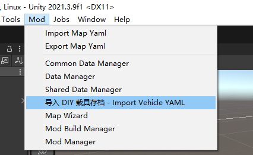
- Added a preview DIY component for trailers 增加拖挂的预览 DIY 组件
- Added an SRP material compatibility component, used for model materials inside VFX 增加 SRP 材质兼容组件，用于做特效中的模型材质
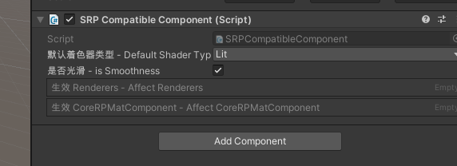
2022.10.22
- Fixed the vehicle name not being written locally in some cases when creating a new vehicle 修复创建新载具时候，部分情况下载具的名称未写入本地
2022.10.20
- Fixed some windows not expanding 修复部分窗口无法展开
2022.10.19
- Fixed vehicles being unable to export textures 修复载具无法导出贴图
2022.10.18
- Added the FireBall and Laser shell types 增加 FireBall 与 Laser 弹种
- Localised the menu dropdowns 菜单下拉框本地化处理
- Localised the VFX dropdowns 特效下拉框本地化处理
- The project has been upgraded to Unity 2021.3.9f1. You have to upgrade to this version to run vehicles in the editor, otherwise they will not load. 项目升级到 Unity 2021.3.9f1 ，若要在编辑器运行载具，则必须升级到此版本，否则无法加载。
2022.9.14
- Fixed editor bugs 修复编辑器 Bug
2022.9.8
- Added VT shells and ammo belts 增加 VT 弹 与弹链
2022.8.29
- Added live debugging to the editor 编辑器增加实时调试功能
2022.8.21
- Added rotation parameters for Mech @宝马鸽 增加 Mech 的旋转参数 @宝马鸽
- Added a tool that fixes Render layer errors 增加工具修复 Render 层级错误： 修复渲染层级错误 @制杖拉菲
- Added a function to unify the X axis of nodes in the track editor 履带编辑器增加节点统一 X 轴功能.
2022.7.12
- Fixed ammo rack sorting preventing a vehicle from being packed in some cases 修复部分情况下弹药架排序导致无法 Pack 载具
Attachment download 附件下载：
2022.5.8
- Fixed DIY vehicle build and upload failures 修复 DIY 载具打包，上传失败
- Added support for ModPackage build scripts, see the document for details: 增加 ModPackage 构建脚本支持 详情查看文档： ModPackage 打包说明
- Fixed dependency assets only applying to DIY content 修复依赖资源只对 DIY 内容生效
2022.4.30
- The Hash of the mod package is now added to the dependency assets, which prevents asset dependency conflicts between encrypted mod packages 增加模组包的 Hash 添加到依赖资源，防止加密模组包之间的资源依赖冲突
- Fixed Vehicle Info for aircraft and weapons failing to build 修复 飞机，武器的 Vehicle Info 无法打包出来